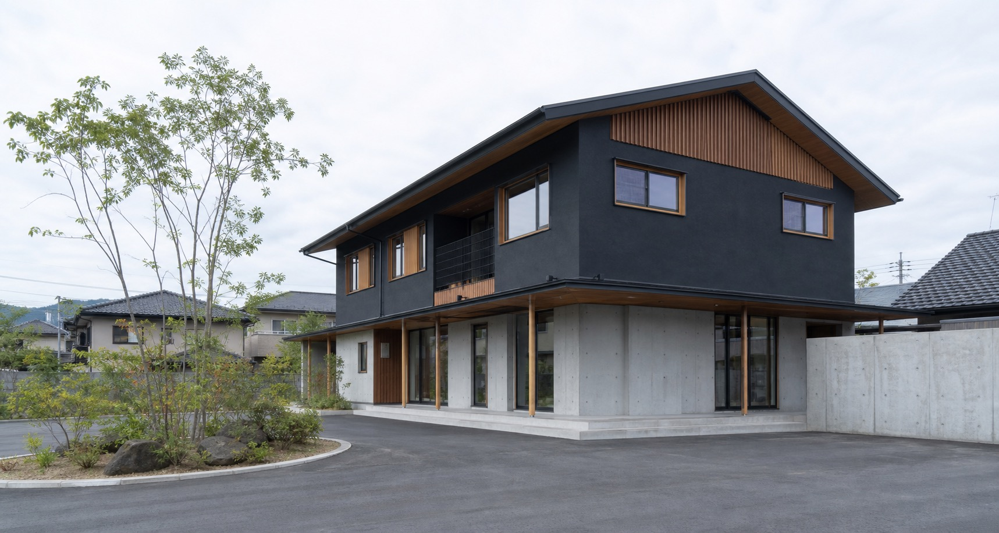
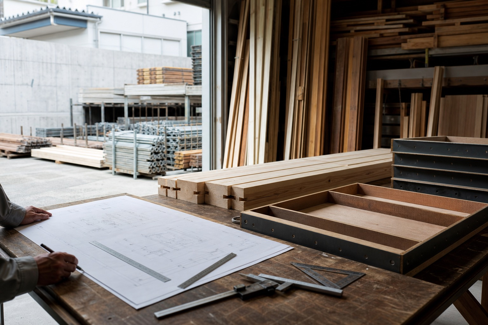
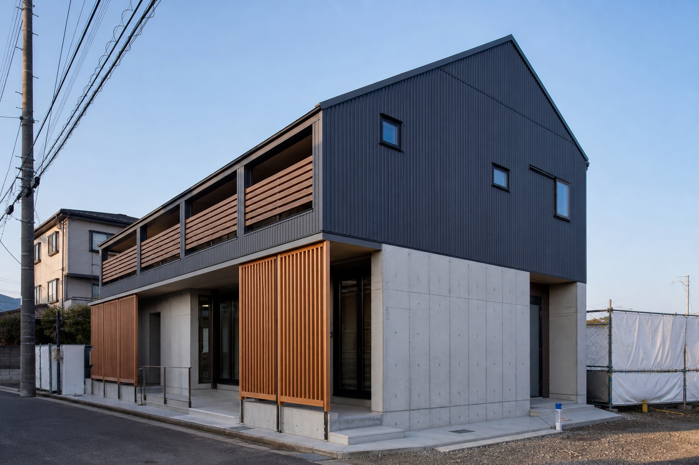
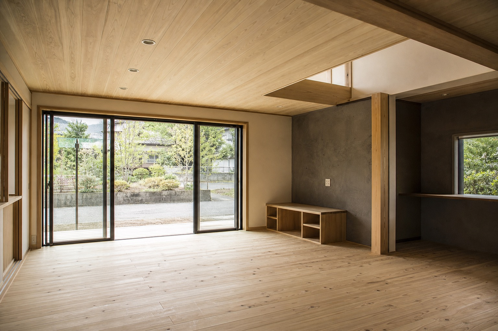
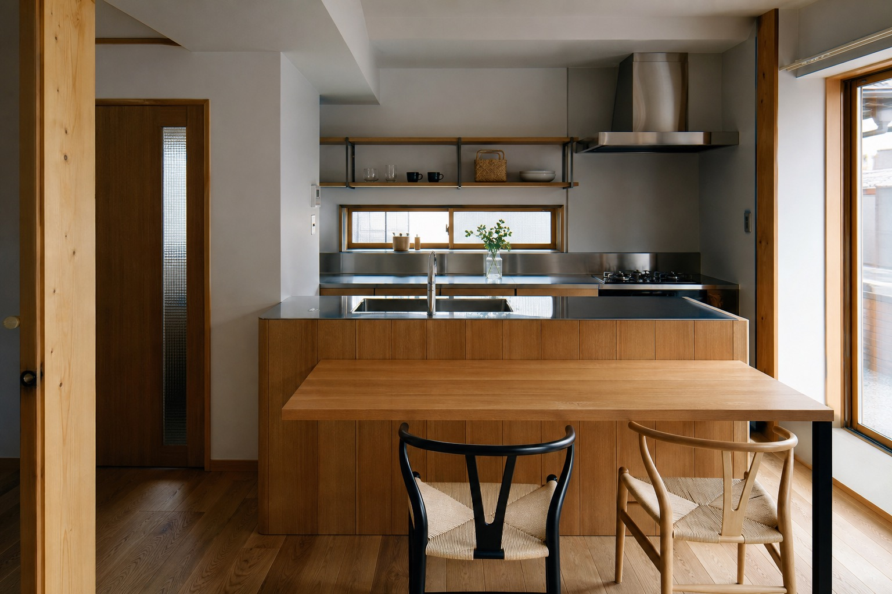

建築工事全般
住宅、マンション、ビル、商業施設など建築物に関する総合建設業。新築工事・リフォームも確認済みです。
このページは営業提案用サンプルです。公式サイトではありません。

仮画像Kagoshima / General Construction
住宅・マンション・商業施設まで。設計、製作・加工、施工を一貫して担う総合建設業の姿を、写真と導線で伝えるリニューアル案です。
Concept
既存サイトでは、建築工事全般に加え、資材や部材の製造・加工、設計まで一貫して相談できる点が強みとして示されています。
デモでは「住宅会社風」に寄せすぎず、鹿児島で建築現場を支える総合建設業として、法人・協力会社・採用候補者にも伝わる構成に整理しました。

仮画像Services
住宅、マンション、ビル、商業施設など建築物に関する総合建設業。新築工事・リフォームも確認済みです。
土木、左官、足場、屋根、配管、塗装、外構、ブロック、防水、内装、型枠、基礎、造成など。
本社とは別に鹿児島市五ケ別府町の資材置き・加工場を構え、工事に伴う資材や部材の製造・加工にも対応。
工事、製作・加工、設計まで一貫して行える点を、相談前の安心材料として見せます。
Strength
Works
実在する施工実績名は作成せず、公開時に公式写真へ差し替える想定のギャラリーです。

仮画像
仮画像
仮画像Recruit / Partner
既存サイトでは、未経験者の採用、経験者優遇、独身寮、資格取得支援、型枠大工、土木作業及び重機オペレーター募集が掲載されています。
営業提案では、問い合わせ導線と採用導線を分け、求職者・協力会社・発注者が迷わない設計にします。
採用・協力会社相談のデモフォームへCompany
Contact
お電話・フォーム・メールの3導線を整理。急ぎの相談は電話、詳細な相談はフォーム、採用応募は種別選択で受ける設計です。
099-281-5631※営業電話は固くお断り致します、という既存サイトの注意書きを反映しています。